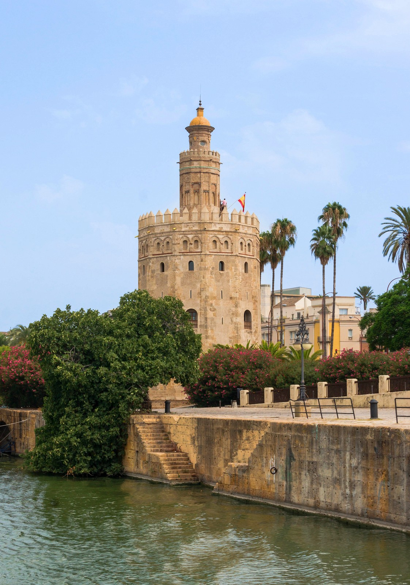

La Torre del Oro es una torre albarrana de origen almohade (siglo XIII) situada a orillas del río Guadalquivir. Su nombre proviene probablemente del brillo que reflejaba sobre el agua al atardecer, debido a la mezcla de cal, paja y argamasa que recubría su fachada. Actualmente alberga el Museo Naval de Sevilla.